Partidul CURAJ pentru România este răspunsul nostru la nevoia de revigorare a scenei politice. Oferim cetățenilor o opțiune politică ce pune accent pe organizare, responsabilitate și pragmatism.
Vino alături de noi!
Formular de înscriere
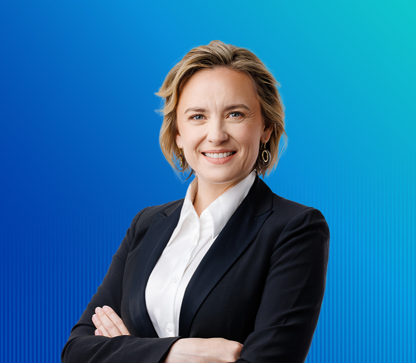
Noul pact pentru România modernă
Cine mai suntem noi, românii? Cine vrem să fim? În afară de limba română, ce ne mai leagă? Dacă plecăm acum din România, mai avem la ce să ne întoarcem peste 20 de ani?
România modernă înseamnă mai mult decât un nivel de trai ridicat și servicii publice de calitate. România modernă înseamnă sentimentul că aparținem unei națiuni care știe ce vrea și este pregătită să-și revendice locul în lume. Pentru asta, trebuie să ne organizăm și să facem curățenie în propria casă. Relația noastră cu statul român trebuie refăcută din temelii. Suntem muncitori, inteligenți și adăugăm valoare oriunde în lume mergem. Suntem respectați peste tot, mai puțin la noi în țară. Vrem să schimbăm asta. Avem nevoie de un nou pact național. Un nou pact între români și stat.
Fără frică, fără justificări. Mergem înainte.
Curaj pentru România!
Cosette ChichirăuPreședintele partidului Curaj pentru România
Prioritățile noastre
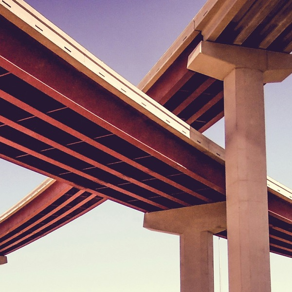
01
Un nou echilibru între stat și privat

01- încurajăm munca productivă prin realocarea a 300.000 de posturi de la stat la privat
- creștem investițiile în infrastructură și internet prin comasarea a 1.000 de comune
- dezvoltăm infrastructura mare prin comasarea județelor și regionalizarea României
- tăiem risipa prin publicarea tuturor contractelor și facturilor plătite de instituțiile publice
- susținem economia reală: locuri de muncă în loc de ajutoare sociale pentru cei apți de muncă
- destructurăm birocrația baronilor: maxim două mandate pentru primari și parlamentari
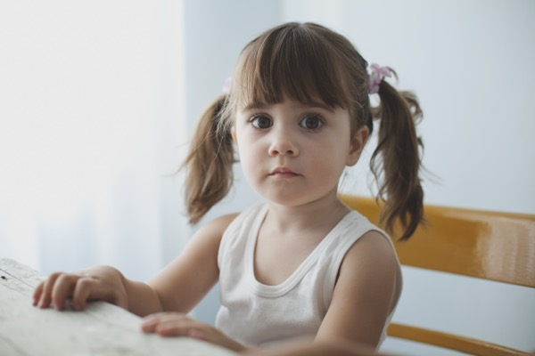
02
Creăm un viitor pentru copiii și tinerii noștri

02- pregătim copiii pentru viitor: lecții filmate, catalog electronic, curriculă personalizată
- asigurăm transport gratuit și masă caldă pentru elevii din medii defavorizate
- subvenționăm chiriile pentru tinerii de 18-26 de ani care studiază sau muncesc
- creștem prima de încadrare în muncă pentru tinerii de 18-26 de ani, absolvenți de studii medii
- introducem un stagiu obligatoriu de practică în clasele 9-11 pentru învățământul teoretic
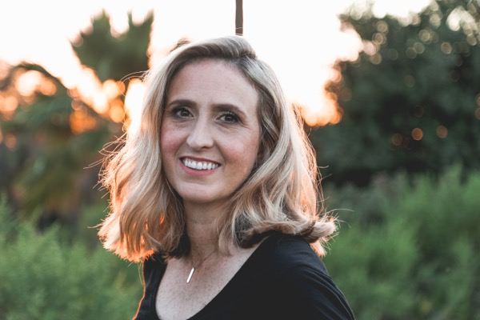
03
Respectăm femeile României

03- asigurăm reprezentare politică corectă: 50% femei pe locurile eligibile
- respectăm femeile la cabinetul medical, inclusiv în ceea ce privește drepturile reproductive
- oferim educație și asistență medicală pe parcursul sarcinii pentru a reduce mortalitatea infantilă
- reducem vârsta de pensionare pentru mame cu un an pentru fiecare copil
- finanțăm vaccinarea HPV pentru fetițe și femei pentru a preveni cancerul de col uterin
- luptăm împotriva violenței domestice
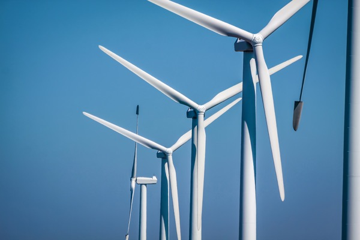
04
Siguranța zilei de mâine

04- oferim pentru toți românii energie mai ieftină, din surse regenerabile
- investim în producția de carne și legume și aducem mai multe produse românești în hypermarketuri
- demarăm cel mai mare program de consolidare seismică și de izolarea termică a clădirilor
- creștem colectarea selectivă a deșeurilor și investim în capacități de sortare și tratare
- oferim servicii medicale la sate prin cabinete medicale mobile
- extindem programele de prevenție și încurajăm controalele medicale anuale
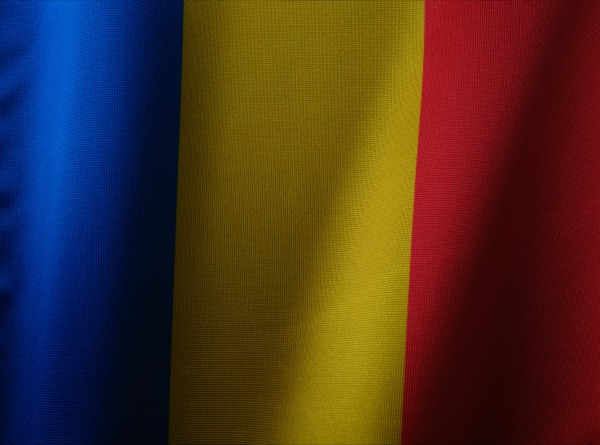
05
Renaștem patriotismul românesc

05- în noul context geopolitic SUA-Rusia-China, negociem să relocăm companii occidentale din Asia în România
- aducem acasă 1 milion de români, în noua industrie din țară
- devenim lider regional de apărare, prin investiții în industria de armament, drone și muniții, cooptând partenerii NATO
- înființăm Corpul Civil de Intervenție printr-un stagiu voluntar de pregătire militară de două săptămâni pentru toți cetățenii apți fizic, bărbați și femei
- accelerăm proiectele de cooperare cu Republica Moldova în plan economic, diplomatic și militar
Echipa
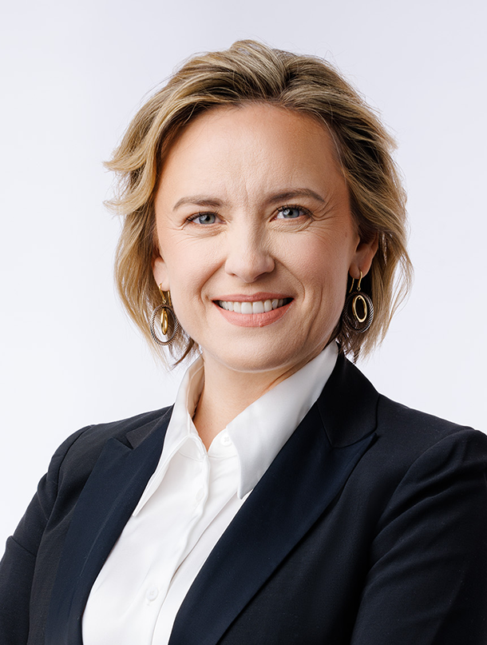
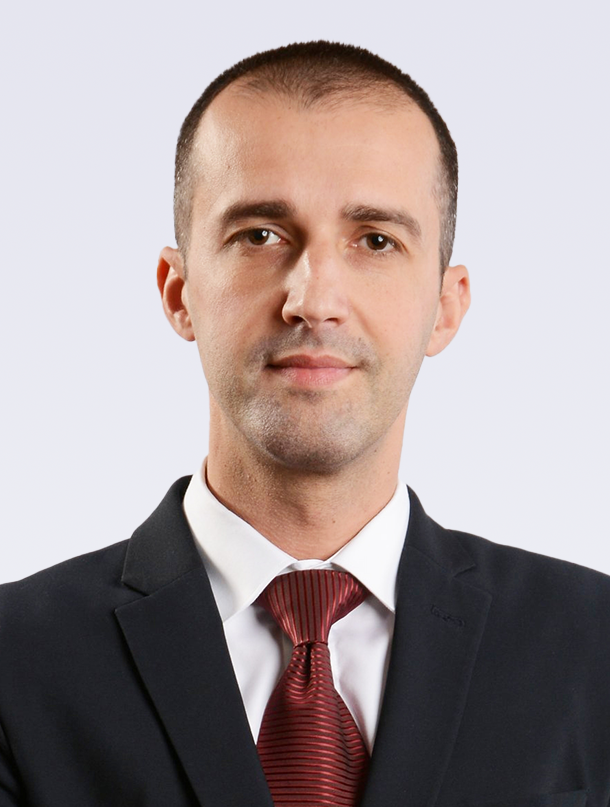
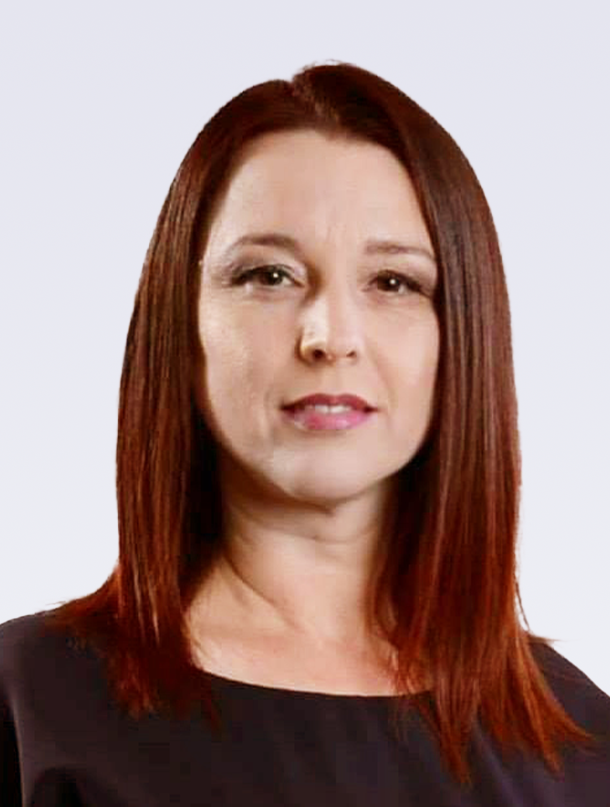
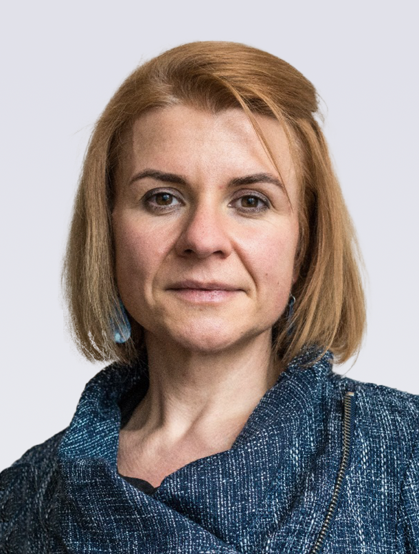
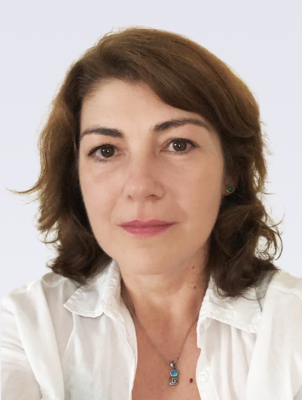
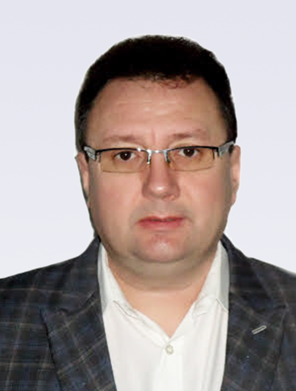
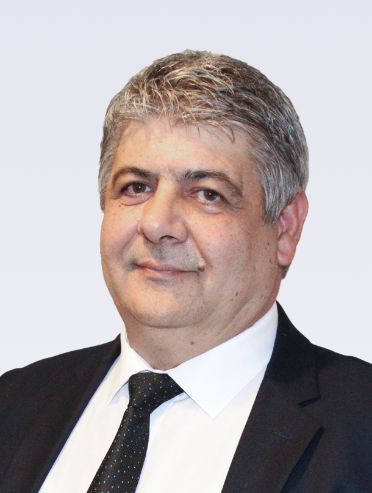
Valorile noastre
Umanismul
În centrul eforturilor noastre sunt oamenii: nevoile, ideile, valorile și munca lor.
Pragmatismul
Imaginăm și dezvoltăm soluții practice pentru problemele actuale.
Spiritul de echipă
Credem în spiritul de echipă, în susținere reciprocă și în efort comun.
Prin ce suntem diferiți
de alte partide?
- Criterii serioase pentru selecția candidaților
- Limite de mandate pentru parlamentari și primari
- Promovarea femeilor în politică
- Cultură internă bazată pe proiecte și soluții
- Cultivarea încrederii și susținerea echipei